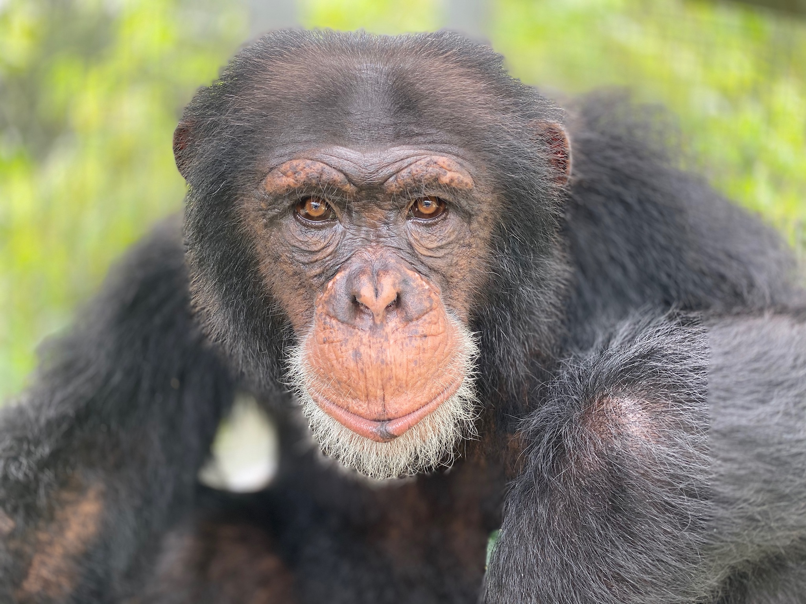

Apes are a clade of Old World simians native to Africa and Southeast Asia, which together with its sister group Cercopithecidae form the catarrhine clade. Apes do not have tails due to a mutation of the TBXT gene. In traditional and non-scientific use, the term "ape" can include tailless primates taxonomically considered Cercopithecidae (such as the Barbary ape and black ape), and is thus not equivalent to the scientific taxon Hominoidea. There are two extant branches of the superfamily Hominoidea: the gibbons, or lesser apes, and the hominids, or great apes. The family Hylobatidae, the lesser apes, include four genera and a total of 20 species of gibbon, including the lar gibbon and the siamang, all native to Asia. They are highly arboreal and bipedal on the ground. They have lighter bodies and smaller social groups than great apes. The family Hominidae, the great apes, include four genera comprising three extant species of orangutans and their subspecies, two extant species of gorillas and their subspecies, two extant species of panins (bonobos and chimpanzees) and their subspecies, and humans in a single extant subspecies. Except for gorillas and humans, hominoids are agile climbers of trees. Apes eat a variety of plant and animal foods, with the majority of food being plant foods, which can include fruits, leaves, stalks, roots and seeds, including nuts and grass seeds. Human diets are sometimes substantially different from that of other hominoids due in part to the development of technology and a wide range of habitation. Humans are by far the most numerous of the hominoid species, in fact outnumbering all other primates by a factor of several thousand to one. All non-human hominoids are rare and threatened with extinction. The eastern hoolock gibbon is the least threatened, only being vulnerable to extinction. Five gibbon species are critically endangered, as are all species of orangutan and gorilla. The remaining species are endangered. The chief threat to most of the endangered species is loss of tropical rainforest habitat, though some populations are further imperiled by hunting for bushmeat. The great apes of Africa are also facing threat from the Ebola virus. Currently considered to be the greatest threat to survival of African apes, Ebola infection is responsible for the death of at least one third of all gorillas and chimpanzees since 1990.
